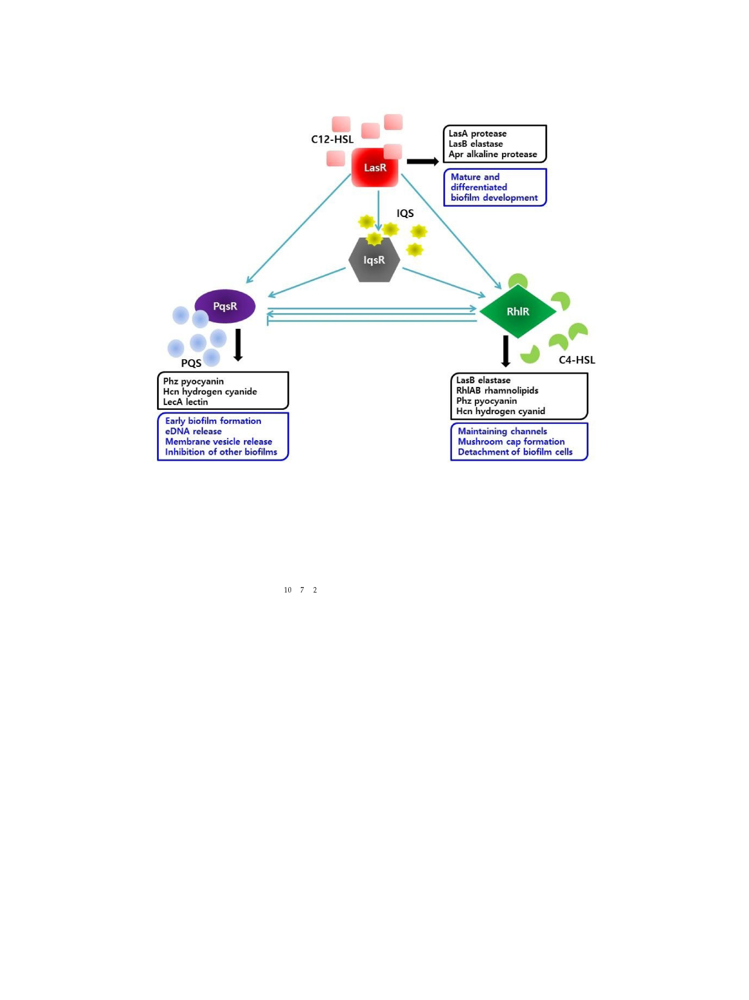

1058 Lee and Yoon
Fig. 2. Interactions between quorum sensing systems of P. aeruginosa.
Blue arrows represent an activation effect. The blue perpendicular line represents an inhibitory effect. Black arrows represent virulence factor
outputs (black box) and functions in biofilm development (blue box).
IQS, which can integrate environmental stress cues into
the QS. The QS molecule of the IQS system is 2-(2-
hydroxyphenyl)-thiazole-4-carbaldehyde (C10H7O2NS) [85].
The operon that encodes for IQS synthesis is ambBCDE. IQS
regulates the production of PQS and C4-HSL, as well as of
related virulence factors, such as elastase, rhamnolipids,
and pyocyanin. IQS is regulated by las and the phosphate
stress response regulator PhoB. Phosphate stress is a
common stress when the bacteria infect hosts, and thus this
stress activates the IQS system and results in the increase of
bacterial virulence [76, 85]. These QS systems have hierarchial
relationships among them. The las system possesses the
highest position in the QS system where it regulates the rhl,
PQS, and IQS systems [77, 86]. The rhl system is at the
lowest level, regulated by all the other QS systems, and
activates the many QS-related virulence factors. PQS is
activated by las and IQS, and activates the rhl system. IQS
is activated by las and regulates the PQS and rhl systems
(Fig. 2) [76]. However, each QS system can also be activated
by environmental factors, such as phosphate stress [87],
starvation [88], low oxygen [77], low iron [89], and several
host-derived factors [76, 85].
P. aeruginosa Biofilm Infections
Biofilms have become a major issue in the medical field
because biofilm infections present high resistance not only
to antibiotics, but also to the host immune response [19, 21,
29]. In addition, microbial pathogen biofilms are major
causes of chronic infection [11]. Biofilm-associated infections
can be divided into two categories. First are biofilm
infections due to indwelling medical devices. For example,
there are infections associated with central venous catheters,
urinary catheters, prosthetic joints, peritoneal dialysis
catheters, pacemakers, contact lenses, and intrauterine
devices. The second are direct biofilm infections in host
tissues, such as chronic pneumonia in CF patients, chronic
otitis media, endocarditis, chronic osteomyelitis, chronic
prostatitis, palindromic urinary tract infection, and gingivitis
[90]. The major problem with biofilm infections in diverse
medical settings is due to their outstanding resistance
against various antibiotics and other disinfectants. The
microbes in biofilms can be hundreds of times more
resistant than their planktonic counterparts [62]. To obtain
high antibiotic resistance, microbes in biofilms use several
J. Microbiol. Biotechnol.